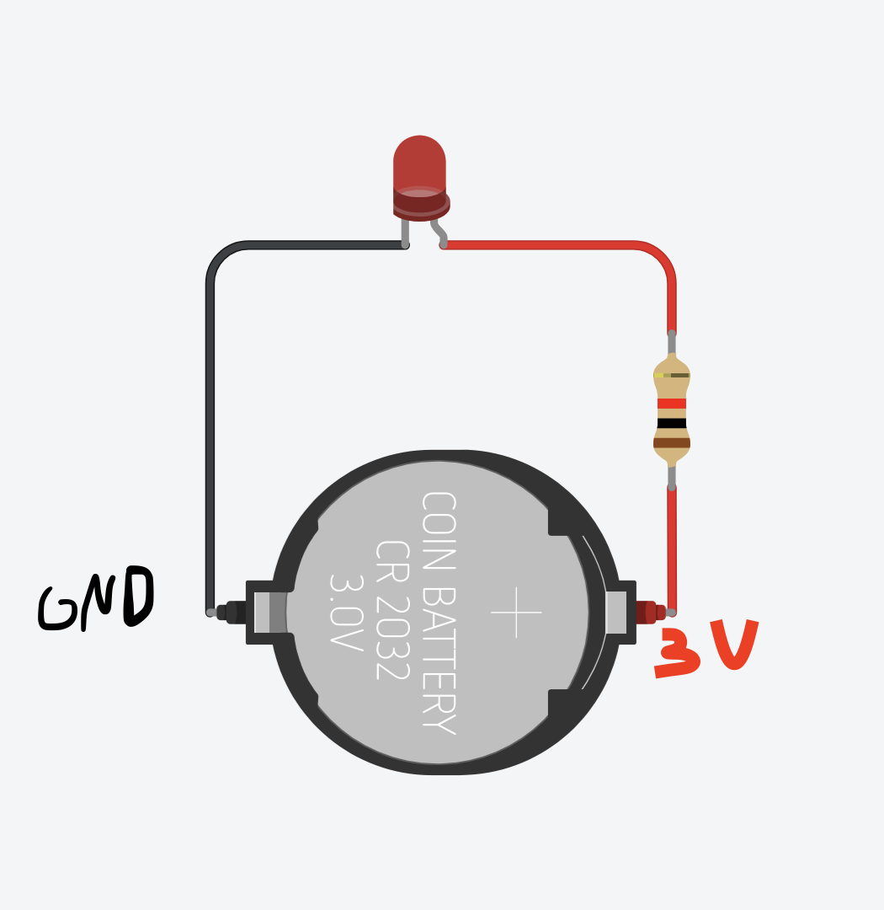
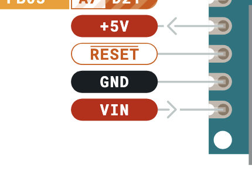
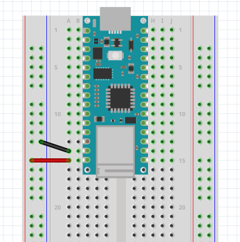
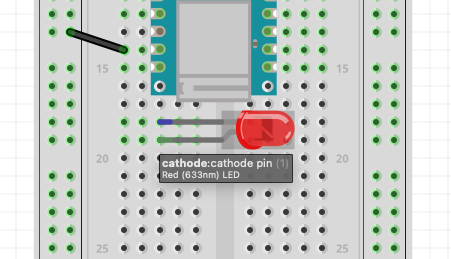
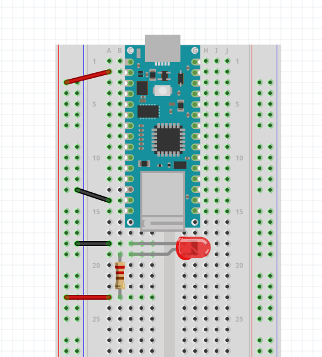

Blink
Basic Board Familiarity
Connecting Power to the Breadboard
Before we start programming with the Nano board, we should first familirize ourselves with how to get power and build a simple circuit like we did before with the LED.
We want to recreate the simple LED-resistor circuit that we built in TinkerCAD, but instead of using a battery, we are going to use the Arduino to power it.

Take note on the pinout document where the 3.3V and GND pins are.

Take some jumper wires and connect the pins to the the appropriate bus on one of the power rails. Try to be consistent with the colors by using a red wire for 3.3V and a black wire for GND.
Also notice that the board conveniently labels the GND pins with a gray square.

It is also a good idea to connect each power bus rail to each other.

Now you can get power from either side of the breadboard.
5V vs 3.3V
Remember that this is a 3.3V logic device, so it is meant to work within that range. However there might be times when we will need 5V. It is possible to get 5V straight from the USB from the Vin pin.

In which case your breadboard would look something like this:

-
The 5V Pin
You might have noticed that on the pinout sheet there is a pin labeled +5V. You can only get 5V from here if you short two pins in the back of the board with a bridge of solder.
Take a look at this article for more info.
LED Circuit

First place the LED so both of its legs are in different rows on the breadboard. It doesn’t matter where as long as the pins are on different rows and that they are not on the same rows as any Arduino pins.

Remember that the LED has polarity, meaning that it does matter which leg goes to positive, and which leg goes to negative. Hover over one of the legs to see which is which. Remember that cathode means negative and anode means positive.

First I connected the cathode to the negative side of the power rail.
Next I want to add a resistor. I will take a 1k Ohm resistor and place it on the other leg to another row of the breadboard.
NoteThe resistor bands in the image indicate that it is a 220 Ohm resistor, but same applies. Technically you can use a 220 Ohm resistor also.

To complete the circuit I connect a red wire from the resistor to the positive bus on the power rail.

This completes the circuit and the LED should light up by supplying it 3.3V from the nano board.
The Blink Sketch
Next we can start looking at our first Arduino sketch.
In your Arduino IDE, navigate to it by going to: File > Examples > 01.Basics > Blink
TinkerCAD
TinkerCAD happens to have some of the basic examples already assembled and wired in the drop bar menu on the right side. These are Under “Starters: Arduino”.
This is what the wiring looks without a breadboard and with the UNO.
Blink sketch breakdown
For the sake of simplicity, I will remove the comments and just have the bare code.
void setup() {
pinMode(LED_BUILTIN, OUTPUT);
}
void loop() {
digitalWrite(LED_BUILTIN, HIGH);
delay(1000);
digitalWrite(LED_BUILTIN, LOW);
delay(1000);
}In each arduino sketch, it is required to have a setup()
and loop() function. We will talk about
functions later on, for now just notice that a function has this sort of
structure:
// a function called myfunction
void myfunction() {
// everything inside the curly brackets is inside the function.
}The setup() function
The setup() function initializes and sets the initial
values. It is the place where you get everything ready before the
actions start happening.
The loop() function
The loop() function is like the animation loop. It runs
over and over until the board turns off or when it is reset. This is
where usually all the action happens.
pinMode() function
pinMode() is also a function. Notice it has the
parantheses, similar to setup() and
loop().
It is a good idea to look at the Arduino documentation for more info:
https://docs.arduino.cc/language-reference/en/functions/digital-io/pinMode/.
According to the website, pinMode():
Configures the specified pin to behave either as an input or an output.
It takes two values, or parameters.
pinMode(pin, mode)The pin parameter takes an integer that corresponds to
the arduino pins. Remember that the built-in LED is connected to pin
13.
pinMode(13, mode)The mode parameter lets arduino know whether to use it
as an input or an output. We know that we want to use this as an
OUTPUT, meaning we want to make something happen to
whatever is connected to it.
pinMode(13, OUTPUT)digitalWrite() function
digitalWrite(), also a function, takes two
parameters.
Check out the Arduino documentation: https://docs.arduino.cc/language-reference/en/functions/digital-io/digitalwrite/
According to the description on the Arduino website:
Write a
HIGHor aLOWvalue to a digital pin.
digitalWrite(pin, value)The first parameter is the pin number. We know that is pin 13.
digitalWrite(13, value)The second parameter is either HIGH or
LOW.
HIGH- means the output is 3.3V.LOW- means the output is 0V.
// output 3.3V
digitalWrite(13, HIGH)
// output 0V
digitalWrite(13, LOW)delay()
The last function in this sketch is delay(). This is
like a pause in the program. It literally tells the program to stop for
a determined amount of time in milliseconds (ms).
From the documentation: https://docs.arduino.cc/language-reference/en/functions/time/delay/
Pauses the program for the amount of time (in milliseconds) specified as parameter. (There are 1000 milliseconds in a second.)
delay(ms)ms: the number in milliseconds to pause.
// pause for 1000 milliseconds (1 second)
delay(1000)
// pause for 100 milliseconds (0.1 second)
delay(100)
// pause for 3000 milliseconds (3 seconds)
delay(3000)The Full Sketch
void setup() {
// initialize digital pin LED_BUILTIN as an output.
pinMode(13, OUTPUT);
}
// the loop function runs over and over again forever
void loop() {
digitalWrite(13, HIGH); // turn the LED on (HIGH is the voltage level)
delay(1000); // wait for a second
digitalWrite(13, LOW); // turn the LED off by making the voltage LOW
delay(1000); // wait for a second
}Now that we went over each part of the sketch, we can make sense of the comments that were provided for us.
LED_BUILTIN
The last thing to explain is that LED_BUILTIN is known
as a constant. It is a built-in
variable.
LED_BUILTIN is really just a name that is in place of
the integer 13.
In other words, LED_BUILTIN has the value of
13.
Variables
To introduce the idea of variables. Let’s define our own variable.
Data Type
To define or declare a variable,
first you need to know what type it is. Type as in data
type. There are several different types, but for now let’s just
introduce the int data type. int stands for
integer.
Variable names
Each variable has its own custom name determined by you. You can name it anything you want, just as long as it doesn’t start with a number. There are variable naming conventions if you want to go down that rabbit hole. But mainly just try to name it something that is easy for you to understand what it represents. For example:
Initializing a Variable and Semicolon
int red_led = 13;This is our full statement for declaring and initializing a variable. Things to note:
- It is of data type
int.intis one of the most common variable types. It is a round number that can be positive or negative.13is a round number, as opposed to a decimal. - we named our variable
red_led, because I know a red LED is connected to pin 13. - we initialized the variable with a value of 13. In other words we assigned it the value of 13 with the equals sign (=). This does not mean “equals to” in programming. It means “red_led is assigned the value of 13”.
- The semicolon is part of the programming language syntax. All statements must end with a semicolon. Just like our written english ends with a period to note the end of a sentence, a semicolon is for the compiler to know the end of a statement.
Putting all of this together you should have a sketch like this:
int red_led = 13;
void setup() {
pinMode(red_led, OUTPUT);
}
void loop() {
digitalWrite(red_led, HIGH);
delay(1000);
digitalWrite(red_led, LOW);
delay(1000);
}This should work just like the original example sketch without
LED_BUILTIN.
Messing with the delay values
Try messing with the value of delay to make the blink faster, slower, or more sporadic.
-
Faster Blink
void setup() { pinMode(LED_BUILTIN, OUTPUT); } void loop() { digitalWrite(LED_BUILTIN, HIGH); delay(100); digitalWrite(LED_BUILTIN, LOW); delay(100); }-
Slower Blink
void setup() { pinMode(LED_BUILTIN, OUTPUT); } void loop() { digitalWrite(LED_BUILTIN, HIGH); delay(2000); digitalWrite(LED_BUILTIN, LOW); delay(2000); }As you can see, a smaller number makes it blink faster, and a bigger number (in ms) makes it blink slower.
-
Slower Blink
random() function
We can introduce a new function for fun.
From the Arduino documentation: https://docs.arduino.cc/language-reference/en/functions/random-numbers/random/
The random function generates pseudo-random numbers.
NoteDon’t worry about what pseudo-random means here. It feels random to us, and that is all that matters for now.
To make things interesting, what if every time the loop function runs, the ms value in the delay function is different each time? In other words, we want it to be a random value each time the loop function starts.
Let’s look at what parameter the random() function
needs.
random(max)The max parameter is the max value from the range (0 -
max). In other words, it will pick a number between 0 and that max value
(not including the max value). For example, if max = 4,
then each time the random() function is called or
executed, it will spit out either a 0, 1, 2, or 3,
giving us 4 different possibilities.
Consider this sketch:
int red_led = 13;
int ms = 1000;
void setup() {
pinMode(red_led, OUTPUT);
}
void loop() {
ms = random(400);
digitalWrite(red_led, HIGH);
delay(ms);
digitalWrite(red_led, LOW);
delay(ms);
}Notice that I declared and initialized a new variable:
int ms = 1000;The variable is called ms, it is of type
int, and it has a starting value of 1000. It actually
doesn’t matter too much what this value is, because when the
loop() starts, it will get overwritten with a random
value.
At the start of the loop(), I assign it a new random
value in the range of 0 - 399 each time.
ms = random(400);Then I just put this variable in the delay()
function.
delay(ms);Glossary
- Comment
- Vin
- Function
- Constants
- Variables
- Parameters
- Data Types (int)
- HIGH / LOW
- INPUT / OUTPUT
- setup() and loop()
- pinMode()
- digitalWrite()
- random()
- compiler
Comments
First thing to notice is that first you are greeted with a description in grey text of what the Blink sketch example does.
Text in this grey color is a comment.
There are two types of comments:
Block format (Multi-line comment)
Single Line Comment
Many of the examples that come with the Arduino program provide a useful link with more information about the sketch.
In this sketch it is this: https://www.arduino.cc/en/Tutorial/BuiltInExamples/Blink.
It is good to click on these links to learn more about each example. It comes with useful wiring diagrams and lessons about what is going on.
Clicking on the link reveals this image:
Let’s recreate this with the Arduino Nano.
First it’s important to note what it says on the sketch description:
It says that there is a built-in LED on the board connected to pin 13. This is the same in the Arduino Nano.
The schematic given also makes it easier to see that the LED-resistor circuit is connected to pin 13 instead of the 3.3V pin that we connected to earlier. Pin 13, or D13, happens to be the pin above the 3.3V pin (with the orientation in the image below).
If you uploaded the sketch to your board and your wiring is the same as the above image, then your LED should be turning on for one second, and turning off for one second.